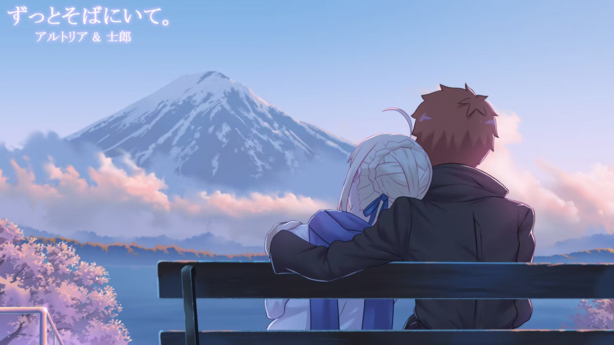
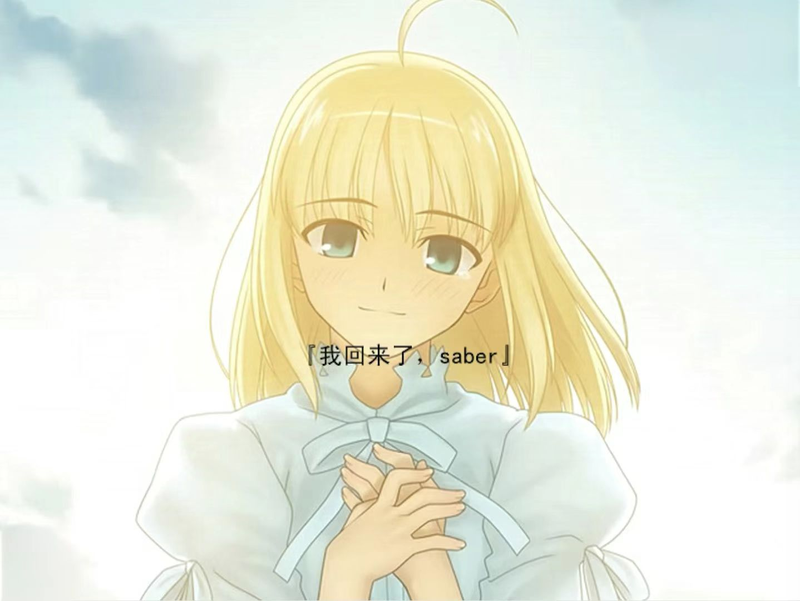
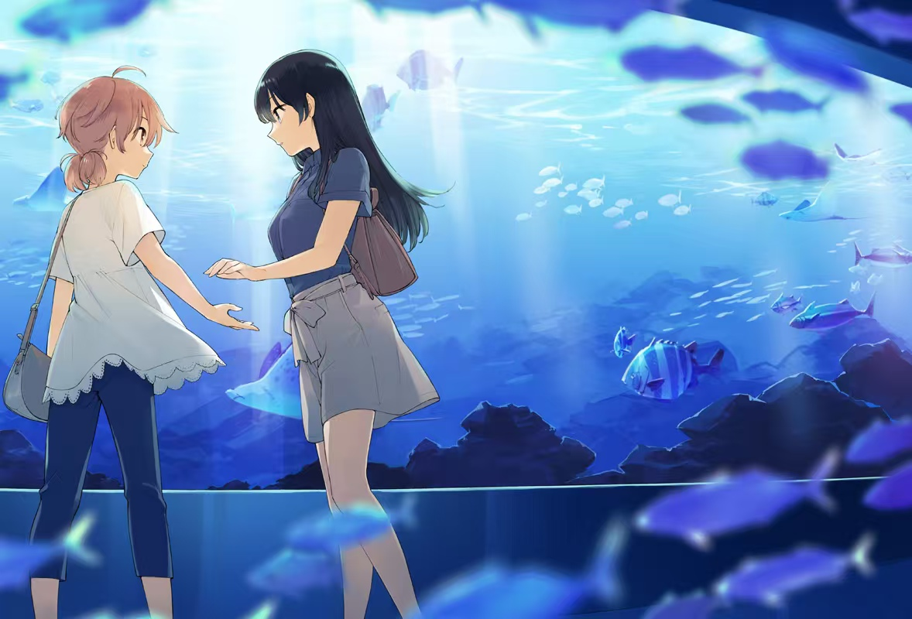
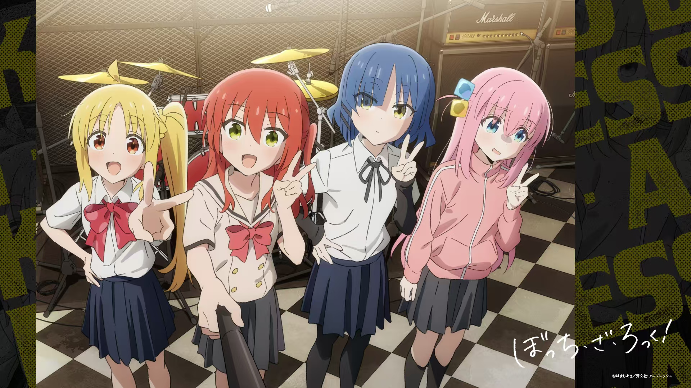
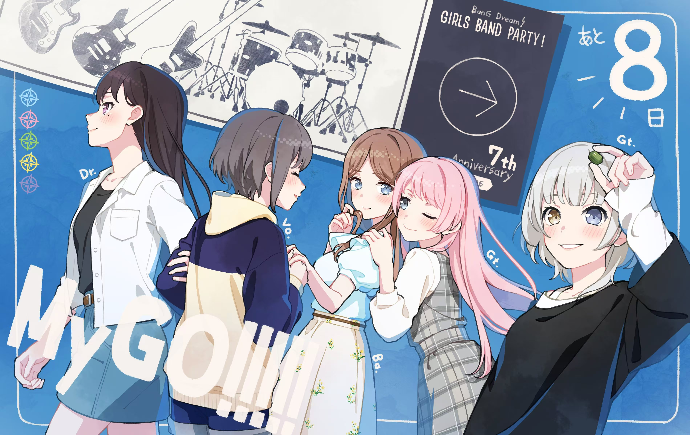
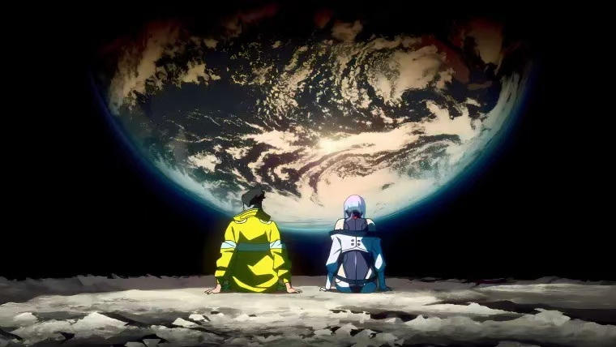

在这里列出的，都是本人看完且印象极深的动漫——谨以此page怀念我的高中苦中作乐的时光。 <---左侧可以调整bgm(骑士王の夸り) |
|  |
《Fate Stay Night》 ...那束光 只有那个声音 我一生都无法忘记 那鲜明的言语 代替逐渐模糊的影像 现在也深深地刻在脑海中 结局 他的生存方式并没有改变 她被回报的事情 也一次没有发生过 美丽的事物无论哪里都存在 虽然 没能再会 那日告别的星辉 但也是令人满足的一生 又想要诉说的事情 有想要传达的心意 ——到底 向星星许过多少次愿了呢 想要见你 想要见你 想要见你 |
|  |
“我回来了 Saber” “欢迎回来 士郎” 梦 就这样 宣告了终结 追逐着星星 寻觅着星星 向前方迈进 又会继续着送别 失去了很多东西 也诞生了很多东西 在这终末之处所存在的 是被浪费了的庞大时间所无法比拟的 小小的小小的一块碎片 就这样 在漫长的旅途的最后 他和她相遇了 憧憬着星星的 他的旅行 在此结束 从今以后 还会有别的 漫长的 他和她的故事 将继续下去 |
|  |
《终将成为你》 人生不会暂且告一段落 日子会毫无停顿地持续 曾经特别的那一天 那个瞬间 也都会被远远甩在身后 回首望去 就好像是闪耀的灯塔和星光 指引着扁舟前行 “我们走吧，灯子” “嗯，侑”
|
|  |
《Bocchi the Rock》 不过啊 一直以来帮我打破这些非常糟糕的状况的 是小孤独你呀 今天的小孤独 对我来说就是真正的英雄 ...... 不过我确信 只要有你在 梦想就能实现 所以接下来也要让我们看到更多 因为 波奇酱的摇滚 就是“孤独摇滚啊” |
|  |
《Bang_dream it’s Mygo！！！！！》 “可以 和我组一辈子乐队吗” “你们已经有吉他手了吧” “我是来结束这个乐队的” “有趣的女人” “不管什么事，你都只想着自己呢” “我想成为人类” “不畏迷茫，迷茫着也要努力前行” “我想我大概、一辈子也忘不了CRYCHIC了吧” |
| 点击下方图片返回 |
|  |